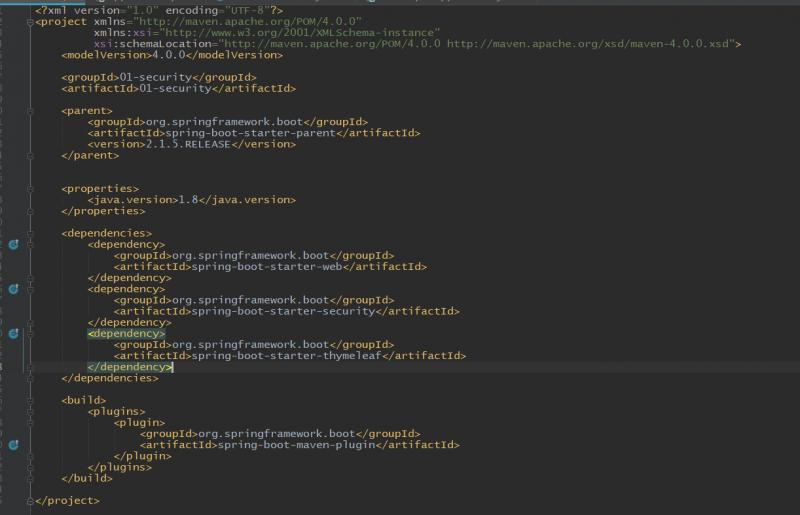
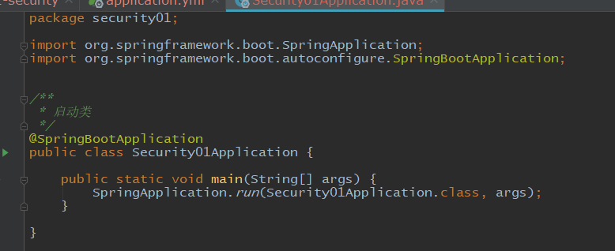
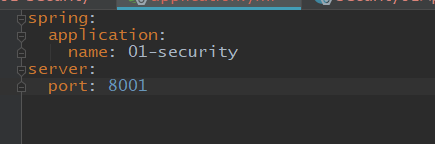
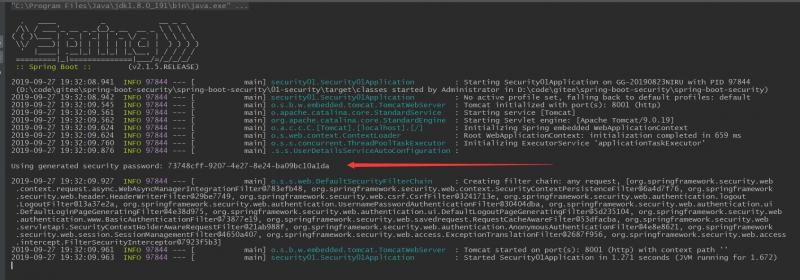
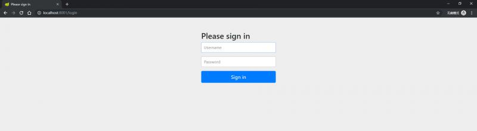
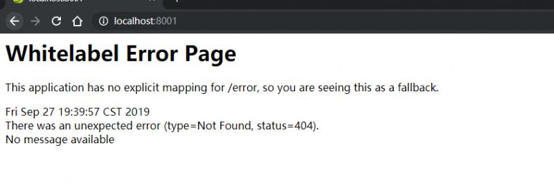
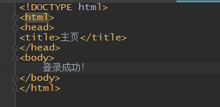
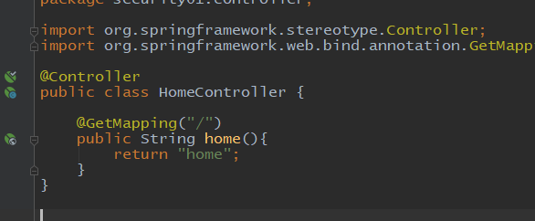
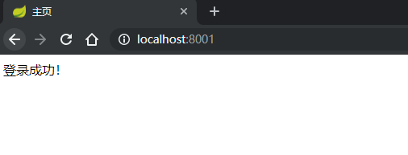
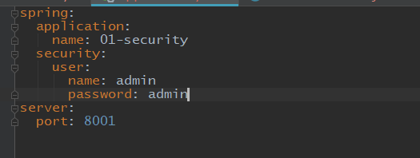

Web应用的安全管理，主要包括两个方面的内容，一个是用户身份的认证，即用户登录的设计，二是用户授权，即一个用户在一个应用系统中能够执行哪些操作的权限管理。权限管理的设计一般使用角色来管理，即给一个用户赋予哪些角色，这个用户就具有哪些权限。
Spring框架体系中，经典的安全体系框架是Security。关于系统的安全管理及各种设计，Spring Security已经大体上都实现了，只需要一些配置和引用就能够正常使用。SpringBoot使用Security更加的简单，因为SpringBoot本身的简单配置使用加上Security的功能丰富全面，可用快速帮助我们构建完善的登陆认证服务。
关于Security，SpringBoot本身有spring-boot-starter-security依赖组件，Spring Cloud微服务全家桶中也有spring-cloud-starter-security依赖组件，并且spring-cloud-starter-security中也包含了spring-boot-starter-security，下面的学习中，会先使spring-boot-starter-security，然后再spring-cloud-starter-security学习安全管理的功能，从SpringBoot单体的登陆注册和权限管理，到Spring Cloud微服务中构建认证和授权服务，都会一一接触到。
关于版本的问题，我从SpringBoot1.3.x版的使用到2.1.x的使用，Security的配置也经历了不小的变化，最准确的配置建议去官网文档学习。
下面的学习中，将使用2.1.5版本，官方文档地址是： https://docs.spring.io/spring-boot/docs/2.1.5.RELEASE/reference/htmlsingle/ 。 Security的源码非常复杂，因此我们后面再讨论深层次的东西，现在来用实例进行入门学习。
先来看一个入门例子，springboot项目结构我们都很熟悉，先来看依赖：

依赖很简单，除了一个web组件和thymeleaf视图组件，就是一个security。接下来看一下启动类：

可以看到启动类没有任何特殊的配置。至于配置文件，我们简单的配置一下端口，其它不做任何配置：

这样一个简单的入门例子就完成了，现在来启动项目，启动日志很短，可以看到有一行特殊的日志：

这是我们加入了security组件的依赖之后，引入了security的默认配置，此时就有了一个简单的登录功能，打印出的一行是默认密码的信息，这个密码是现在没有任何代码和配置的状态下每次启动随机生成的，security不仅会生成一个默认密码，依赖组件中还有一个默认的登陆链接/login，还有一个默认的用户名 user，而且在springboot2.1.x版本中，这个/login有一个非常不错的默认登录页面，下面进行测试：

用户名输入user，密码输入日志中打印出的随机密码，登录成功后，就会跳转到默认地址，默认成功的地址就是登录地址去掉/login，

现在没有定义任何链接匹配这个地址，我们来定义一个简单的页面，在resource下面，新建一个templates文件夹，在templates下面新建一个主页 home.html，内容如下：

然后定义一个controller跳转到这个页面：

这样我们登陆成功后，就能自动跳转到这个页面：

这样，一个最简单的登录流程就完成了，我们几乎没有做任何配置，只是引入了一个依赖而已。下面我们给security配置一个默认用户名密码，这样就不用每次启动都用随机密码，直接在springboot的默认配置文件中配置：

这样等登陆就可以使用 admin/admin登陆了。